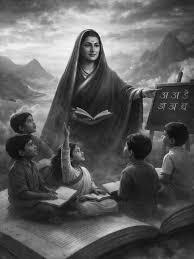

1831 – 1897

— Savitribai Phule
Savitribai Phule was India's first female teacher, social reformer, and poet. Along with her husband Jyotirao Phule, she played a crucial role in promoting women's education and fighting caste discrimination in nineteenth-century India.
She opened the first school for girls in Pune and worked tirelessly to ensure education reached those who were denied opportunities because of gender or social background.
Savitribai Phule's work transformed Indian society and continues to inspire educators, reformers, students, and activists across the country.